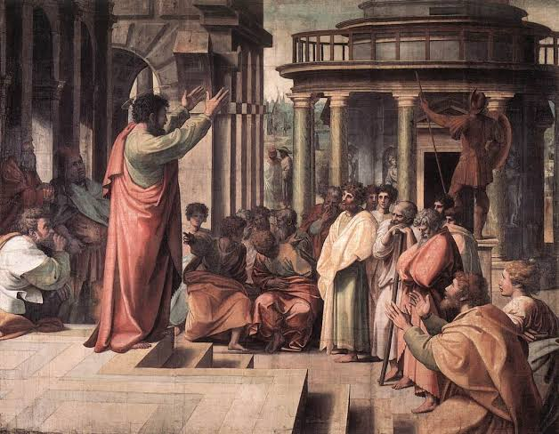

1.Quando pode ser considerado Advogado?
Ao contrário do que muitos pensam , só pode ser chamado de Advogado aquele que, além de concluir o curso de Direito, foi aprovado no exame da ordem e se inscreveu na OAB. A pessoa que somente concluiu o curso é denominada bacharel em Direito. Estranho né?
2.Primeira mulher advogada brasileira
Myrthes nasceu em Macaé/RJ, em 1875, e desde cedo demonstrou seu interesse pelas leis. No entanto, era impensável, à época, que uma mulher construísse uma vida fora do casamento. Foi uma surpresa à família quando a jovem anunciou que partiria para a capital do Estado para ingressar na faculdade. Myrthes concluiu o bacharelado em Direito em 1898, mas, por conta do preconceito, foi só em 1906 que conseguiu legitimar-se profissionalmente, quando ingressou no quadro de sócios efetivos do Instituto dos Advogados do Brasil, condição necessária para o exercício profissional da advocacia.
3.Alguns ditados populares...
Advogado do Diabo: Essa expressão é antiga e vem da religião católica, em que um advogado tem função de rechaçar os méritos de um candidato à canonização.
Do Contra: A famosa expressão latina data venia significa “dada a permissão”, e os Advogados a utilizam quando desejam falar discordando de seus interlocutores.

4.Primeiros advogados do Mundo
Os mestres sofistas da Grécia Antiga podem ser chamados de os primeiros advogados do mundo, porque, com grande poder de argumentação e dissuasão, cobravam das pessoas para fazer suas defesas.Garanto que essa você não sabia.